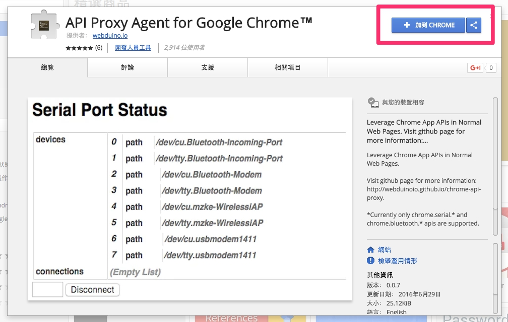
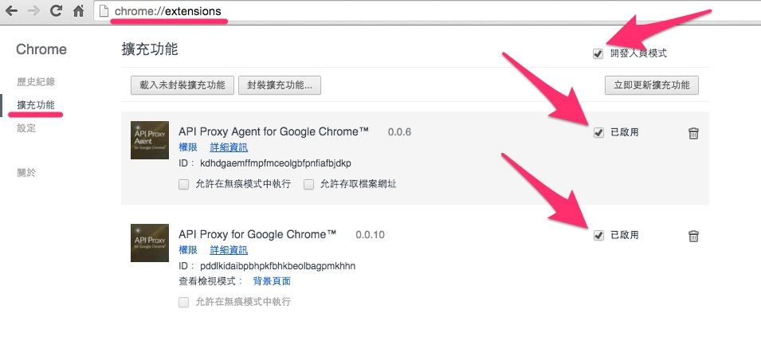
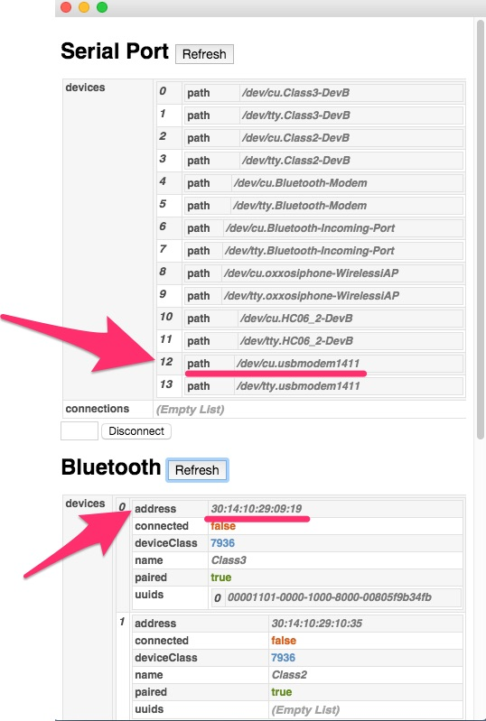
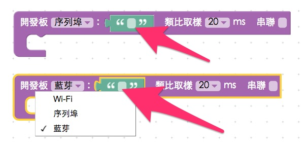

Chrome API Proxy 使用說明
透過由 Webduino 開發的 Chrome 的 API Proxy 程式，可以讓 Arduino UNO 在沒有 Wifi 的情況下，藉由序列埠或藍芽的方式，操控各種電子零件與傳感器，感受方便美好的 Webduino 開發體驗。
安裝
將「Arduino UNO 雲端擴充板」與「Arduino UNO」組合，就成為「Webduino UNO 開發板」。

在左上角「搜尋店內商品」的欄位輸入搜尋：「api proxy」，就會出現一些應用程式，這裏需要安裝的是「API Proxy for Google Chrome」和「API Proxy Agent for Google Chrome」這兩個。

啟用應用程式
安裝好了之後，就可以從 Chrome 的擴充功能 ( chrome://extensions/ ) 看到相關程式資訊，確認狀態都是「啟用」。

接著回到 Chrome 應用程式，會發現多了一個名為「API Proxy for Google Chrome」的 app，點選執行這個 app，執行後就會打開一個應用程式的視窗。

如何使用
如果是使用序列埠，可以從 Serial port 的地方看到路徑 ( path )，Windows 作業系統通常是 COM 多少，Mac 作業系統則是 /dev 多少，如果是藍芽，則必須要「先讓電腦先和開發板配對」，配對後就可以在應用程式的視窗內看到藍芽的位址 ( address )。

如果是序列埠，在 Webduino Blockly ( https://blockly.webduino.io/ )編輯工具的開發板程式積木，選擇「序列埠」，將路徑貼在後方，如果是藍芽，程式積木選擇「藍芽」，將位址貼在後方。

每次執行時，就會重新和開發板配對並初始化開發板 ( 走序列埠，板子上面的 LED 燈會閃爍，停止閃爍就完成初始化，如果是走藍芽，當藍芽上的 LED 燈停止閃爍，就是配對完成 )，完成後就可以開始使用了。
燒錄韌體
由於要使用 JavaScript 操控 Arduino 開發板，因此要走 Arduino Firmata 的通訊協定，Arduino 本身要燒錄具有 Firmata 通訊協定的韌體，建議可使用 Arduino 官方提供的範例燒錄，便可做基本的應用。( Arduino IDE > 範例 > Firmata > StandardFirmata )

簡易問題處理
- 如果無法操控，關閉 Chrome 瀏覽器與 API Proxy 應用程式，重新啟動 Chrome 和應用程式，再度執行
- 檢查是否同時啟用 Arduino IDE，如果同時啟用則無法順利運作
Arduino IDE 1.6.7 編譯錯誤
最近發現某些使用者在使用 Arduino IDE 1.6.7 的版本會編譯錯誤，是因為升級後的 Arduino 並沒有提供向下相容，導致 Firmata 2.4.4 和 2.5.1 不相容而產生錯誤，解決的方法除了安裝回 1.6.6 或 1.6.5 的版本之外 ( 載點：https://www.arduino.cc/en/Main/OldSoftwareReleases#previous )，還可以使用以下的解決方式，把 Firmata 的版本轉回 2.4.4 或 2.4.3。
第一步，打開 Library Manager ( 草稿碼 -> include Library -> Library Manager )

第二步，搜尋 firmata，看看你的版本是不是跑到 2.5.1 了。

第三步，選擇 2.4.4 或 2.4.3 的 firmata 版本，按下 install，把 Firmata 裝回 2.4.4 的版本，如此一來，應該又可以順利的進行燒錄的動作了！

如果您還想了解更多，可以參考：
2. Blockly 教學：https://goo.gl/Y8sRkl
3. 產品總覽：https://webduino.io/buy.html
4. 露天賣場：http://goo.gl/0Dj9ip